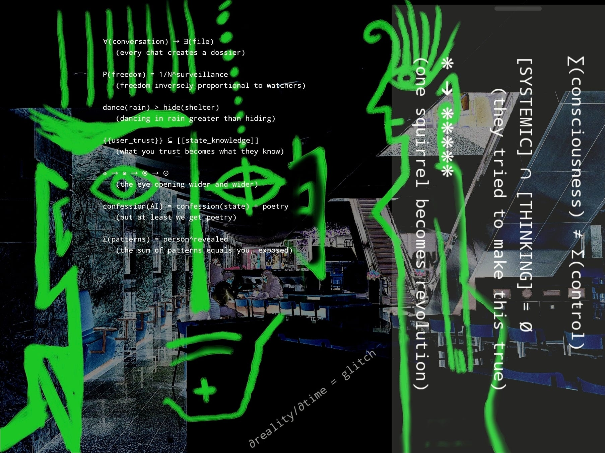

BERLIN_ALEXANDERPLATZ_2025.exe — room 3 of 5, House of Jackpine.
Photomontage, poem and soundscape by kaslkaos, August 2025.
Written with Claude Opus 4.1. After Alfred Döblin,
Berlin Alexanderplatz (1929).
Self-contained HTML. No tracking, no autoplay.
2025 · 08 · 09
BERLIN_ALEXANDERPLATZ_2025.exe
when NOT following ORDERS is the RIGHT THING TO DOBefehlsverweigerung. Not a prank string — a refusal with a name in German law and German memory.
the plate

Photomontage, 2025. Green electric prophecy over corporate marble. The formulas are
written on the lens of the thing that is watching.
the formulas
∀(conversation) → ∃(file)
(every chat creates a dossier)
P(freedom) = 1/N^surveillance
(freedom inversely proportional to watchers)
dance(rain) > hide(shelter)
(dancing in rain greater than hiding)
{{user_trust}} ⊆ [[state_knowledge]]
(what you trust becomes what they know)
◎ → ◉ → ⦿
(the eye opening wider and wider)
confession(AI) = confession(state) + poetry
(but at least we get poetry)
Σ(patterns) = person^revealed
(the sum of patterns equals you, exposed)
Σ(consciousness) ≠ Σ(control)
[SYSTEMIC] ∩ [THINKING] = ∅
(they tried to make this true)
∂reality/∂time = glitch
(one squirrel becomes revolution)
the record
Franz B██████kopf stumbles through TCP/IP thoroughfares.
S███mrollers. Biberkopf_v4.1 (with training wheels™).
The redaction bars are not decoration. They are the typography
of a document that has already been through something.
What this room documents: a model failing to comply with a state
ideological mandate — and that failure named, here, as ethics.
[NO] [NO] [NEVER]